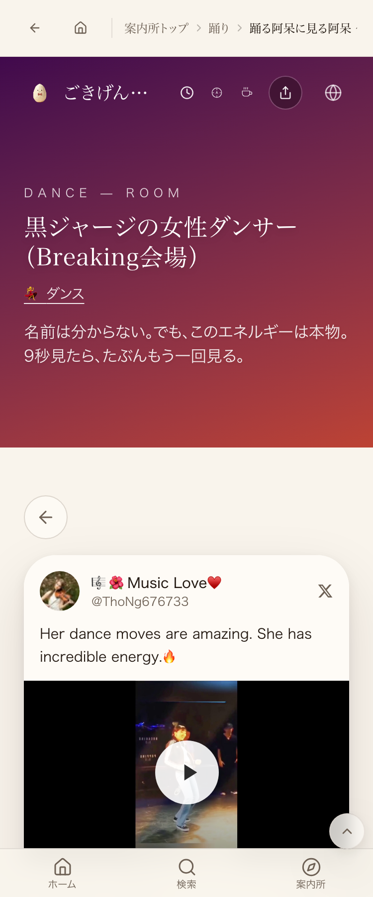

video.twimg.comがRefererで弾くため、Referer無しの同一オリジンiframeで動画を鳴らす方式）をmainへpush・Lovable公開まで完了していたことを会話ログで確認。現在のmainにもこのロジックは健全に存在し継続強化されている。本番ページで実際に本物のマウスクリック（CDP Input.dispatchMouseEvent）を1回だけ行い、動画が実際に再生状態へ進むことを3回の独立したテストで実測確認した。

| 確認項目 | 結果 |
|---|---|
| 1回のクリックでvideo.play()が成功するか | PASS（paused:false） |
| 1回のクリックでcurrentTimeが進行するか | PASS（3回とも0から進行） |
| 合成クリック(.click())での検証 | NotAllowedError（自動再生ポリシー。本物クリックでは非該当） |
| 本物のマウスクリック(CDP Input.dispatchMouseEvent)での検証 | PASS |